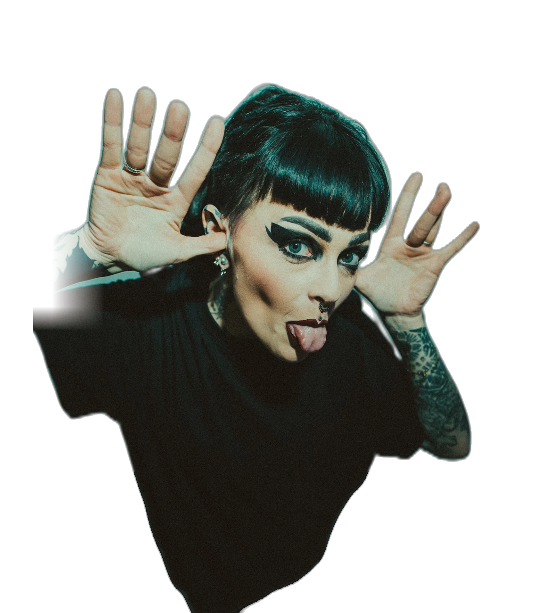
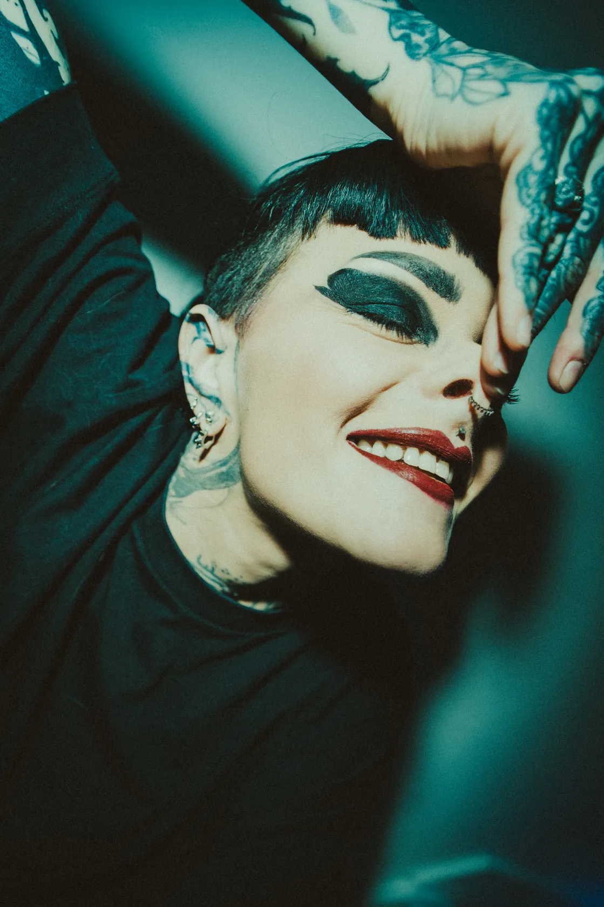
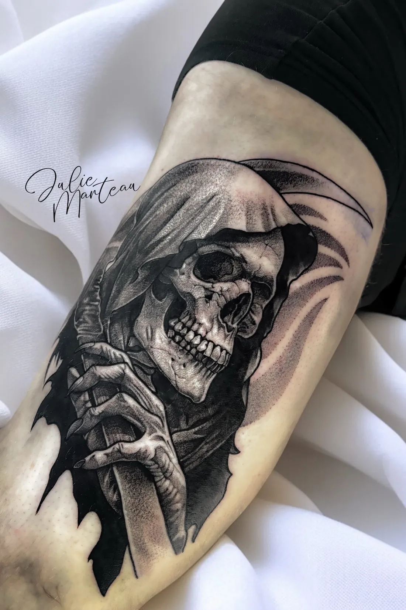
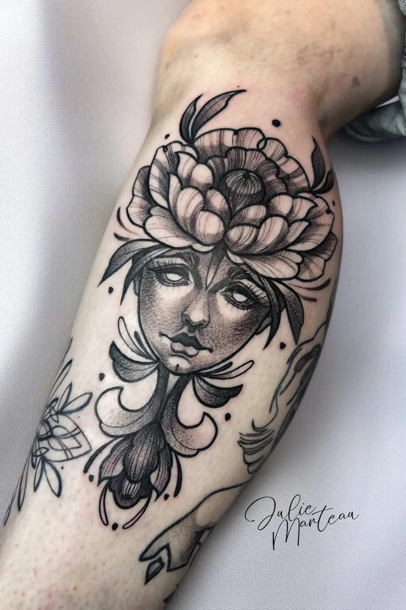
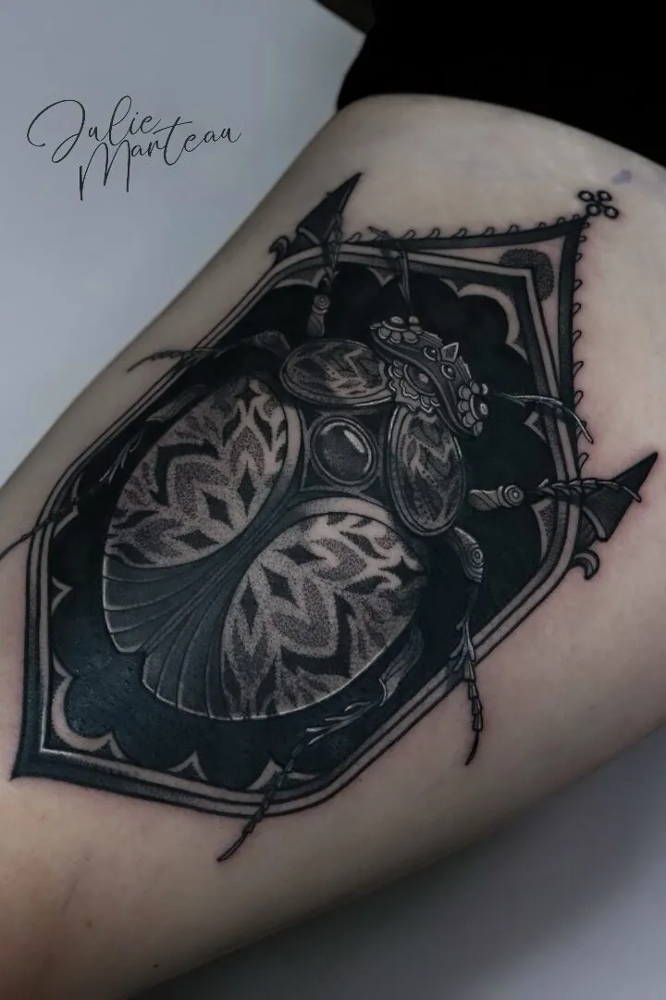
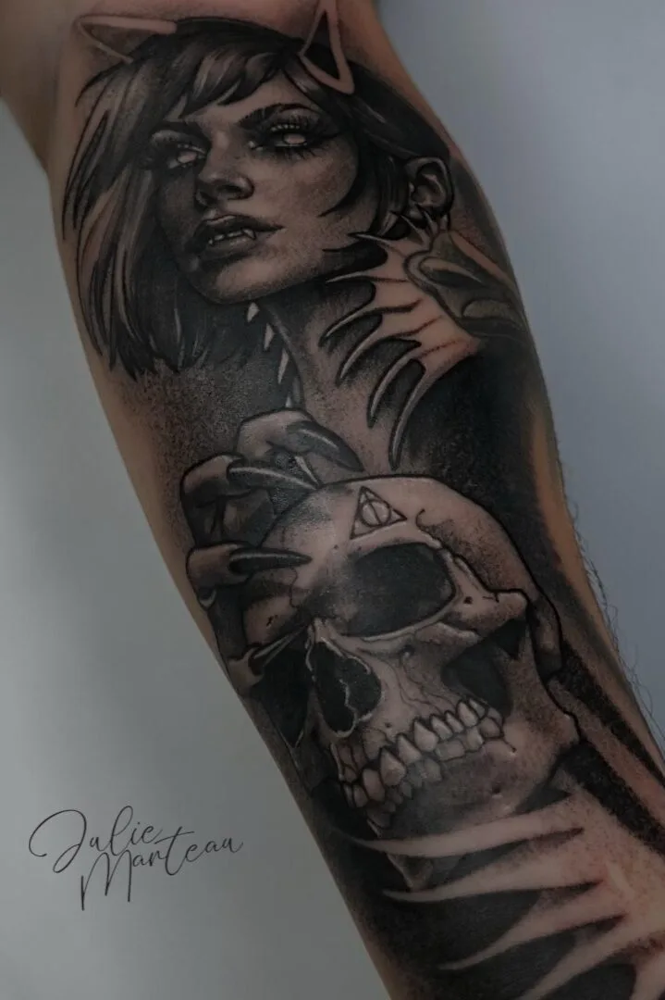
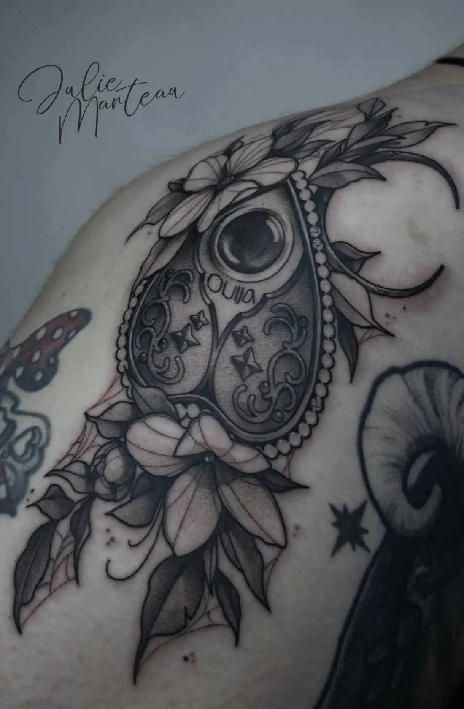
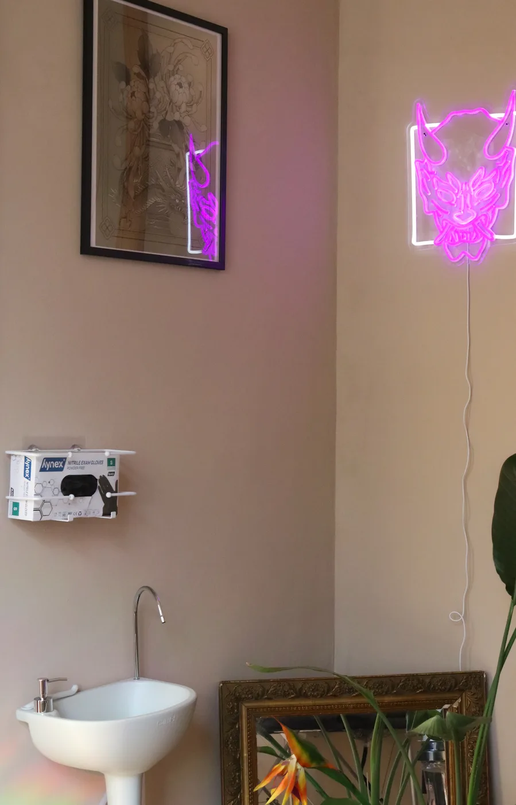
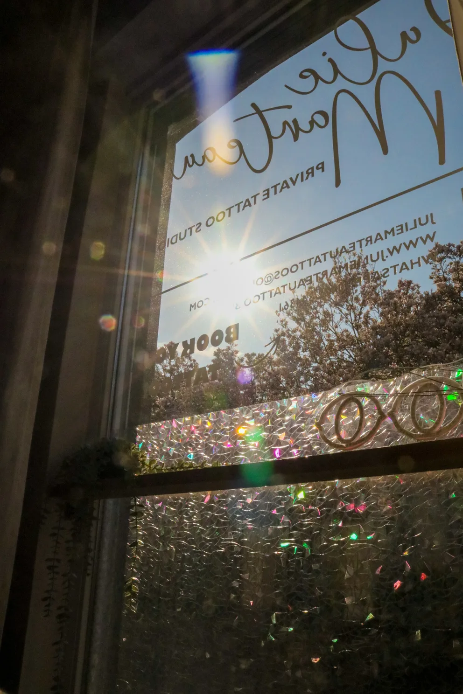
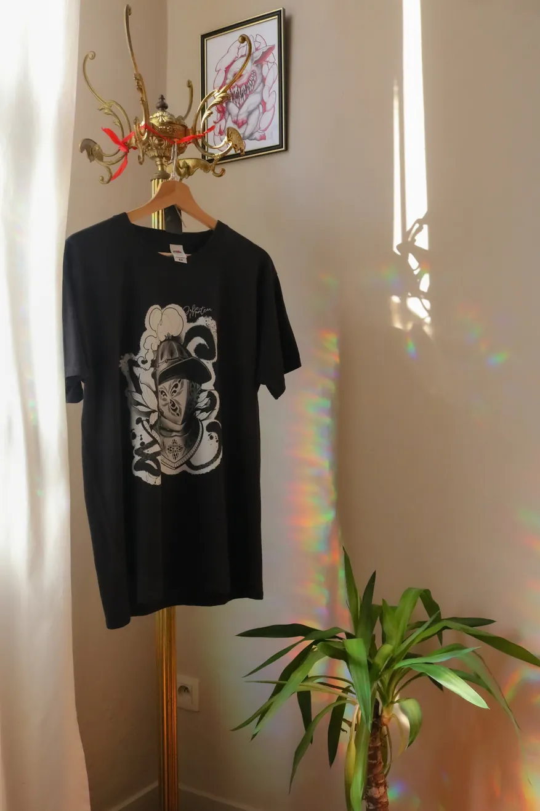

Jij brengthet idee.Ik breng de inkt.
Hey daar, ik ben Julie. Strak uitgewerkt plan of gewoon "iets met een vibe": allebei goed. De rest tekenen we samen.


Ik spreek vloeiend vaag.
Heb je een strak uitgewerkt idee?
Top.
Heb je alleen "iets met een vibe" en nul uitleg?
Ook top.
Ik neem mijn tijd. Niet omdat ik traag ben, maar omdat ik 400% inzoom op details en mijn innerlijke perfectionist anders niet kan slapen.
Verwacht focus, eerlijke feedback en af en toe een flauwe mop. Slechte humor is inbegrepen. Gratis.
Vers uit de machine
Sterk contrast, strakke lijnen en een plaatsing die klopt. Elk ontwerp teken ik zelf, ook als het moet passen bij wat je al hebt.






Een hoekje van de nieuwe studio in Ramsel.
Van vaag idee tot verse inkt
Alles gaat op afspraak. Zo heb ik de tijd voor jouw ontwerp, en jij voor een koffie of iets fris in de stoel.
- 01
Stuur je idee
Via WhatsApp of mail. Hoe vaag ook, vertel me gewoon wat je in je hoofd hebt.
je ideede plaats op je lichaamde grootteje Pinterest-bord - 02
Het ontwerp
Ik teken je tattoo en geef eerlijk advies. Moet hij passen bij wat je al hebt? Dan hou ik daar rekening mee.
- 03
De afspraak
Je komt naar de studio in Ramsel. Ik neem mijn tijd, jij krijgt koffie of iets fris en waarschijnlijk een flauwe mop.
- 04
Mee naar huis
Je vertrekt met folie of met Second Skin, en met de juiste verzorging. Die staat hieronder.
Zo blijft hij mooi
Folie of Second Skin? Je hoort het op de dag zelf. Volg dan gewoon het kaartje dat bij jou hoort.
Met huishoudfolie
- Laat de folie 2 tot 3 uur zitten.
- Handen wassen, tattoo reinigen met lauw water en milde, parfumvrije zeep. Deppen, niet wrijven.
- Minstens twee weken een dun laagje aftercarecrème na elke wasbeurt.
- Niet krabben of pulken. Korstjes komen vanzelf los.
- Minstens 4 weken geen zon, sauna, zwemmen of jacuzzi. Daarna factor 50+.
Met Second Skin
- Laat de Second Skin 3 tot 5 dagen zitten. Vocht en inkt eronder zijn normaal.
- Verwijder hem traag onder een lauwe douche, parallel met je huid.
- Handen wassen, tattoo reinigen met milde, parfumvrije zeep. Deppen, niet wrijven.
- Minstens twee weken een dun laagje aftercarecrème na elke wasbeurt.
- Jeuk en vervellen zijn normaal. Niet krabben.
- Minstens 4 weken geen zon, sauna, zwemmen, jacuzzi of zonnebank. Daarna factor 50+.
Komt de Second Skin los, lekt hij of komt er water of vuil onder? Haal hem dan meteen weg en volg Route A vanaf stap 2.
"Ik ben bij Julie gekomen met een idee en met wat constructieve feedback heeft ze me verrast met dit prachtige design."
"Ik ben met een vaag idee naar Julie gegaan. Ze heeft een mooie tattoo ontworpen die goed paste bij mijn andere tattoos."
"Julie werkt snel, efficient en proper"


Een nieuwe plek, dezelfde Julie
Mijn studio zit nu in Ramsel, in een eigen plekje binnen een gezellige, gedeelde creatieve ruimte. Een nieuwe locatie, een frisse start en natuurlijk dezelfde Julie achter de tattoomachine.
Gemaild en geen antwoord? Kijk even in je spam, daar belanden mails soms.
Jij brengt het idee. Ik breng de inkt.
En waarschijnlijk koffie of iets fris.